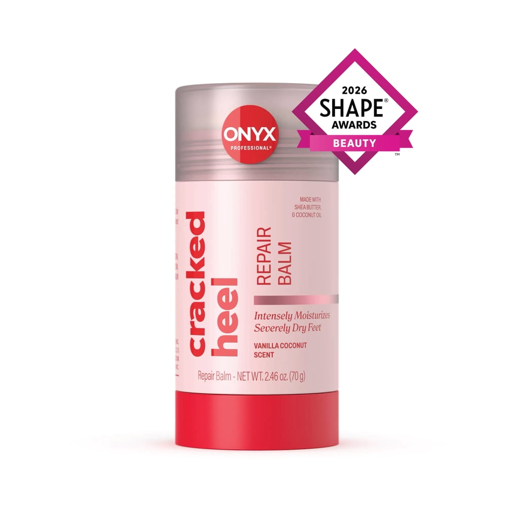
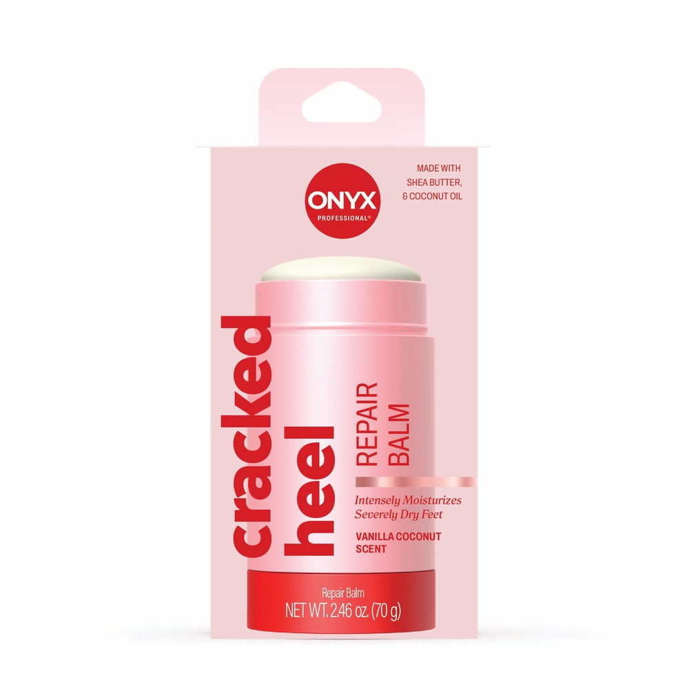
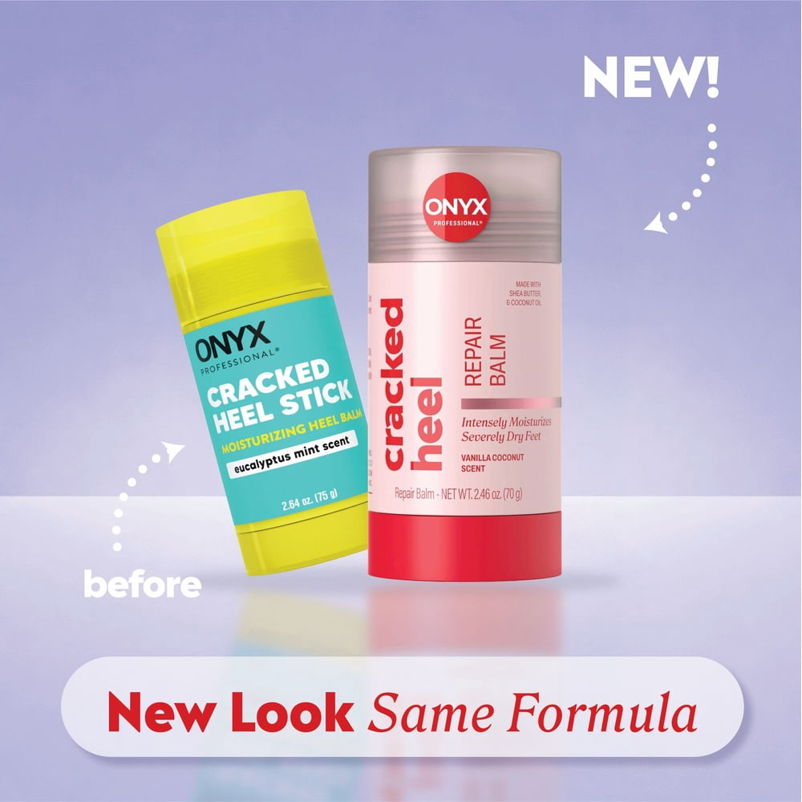
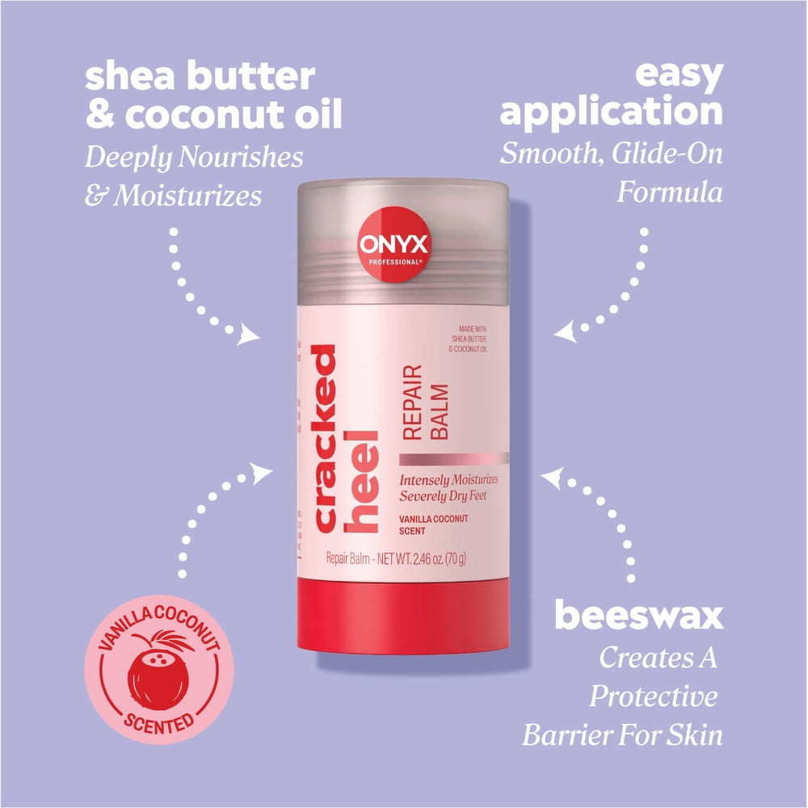

Onyx Professional Cracked Heel Repair Balm With Shea Butter — Vanilla Coconut Scent — 2.46 oz
$6.97
- Бальзам для восстановления треснувшей кожи пяток с маслом ши, пчелиным воском и кокосовым маслом.
- Интенсивно увлажняет и смягчает даже сильно огрубевшую кожу.
- Можно использовать для рук, коленей и локтей.
- Работает как антифрикционный стик против натирания.
- Аромат ванили и кокоса, формат стика — наносится без рук.
- Объём 2.46 oz (70 г).